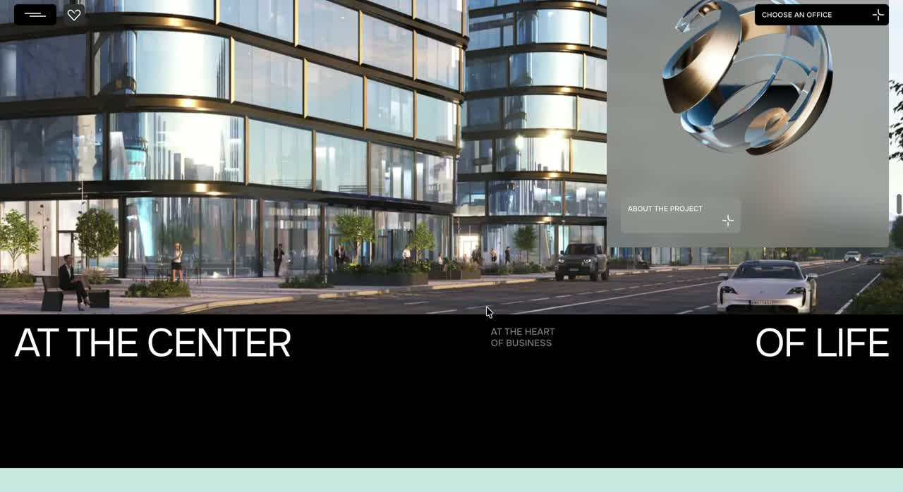
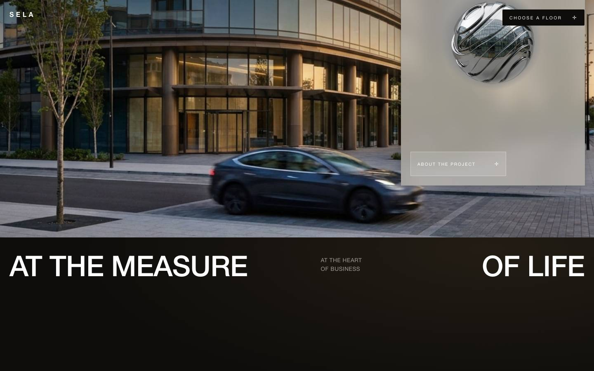
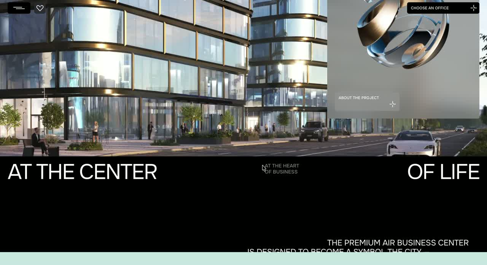
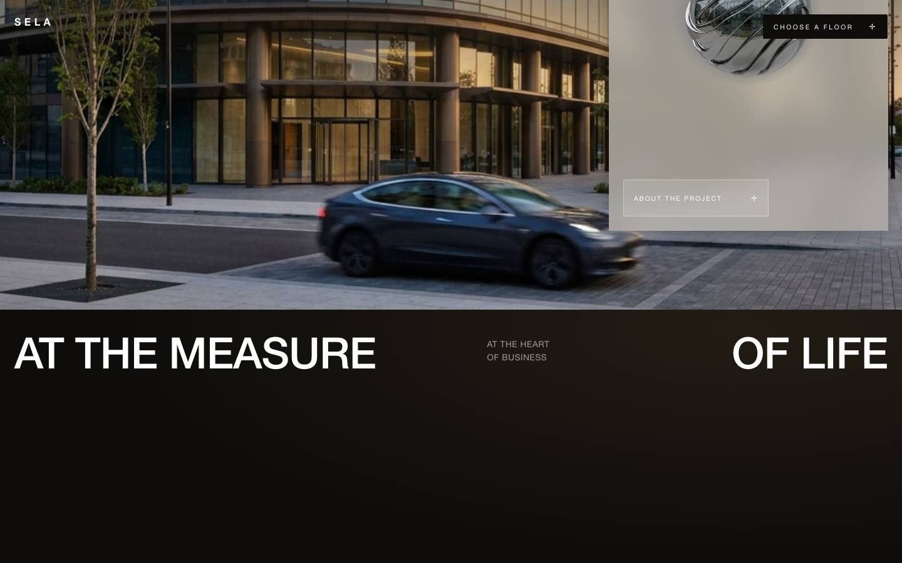
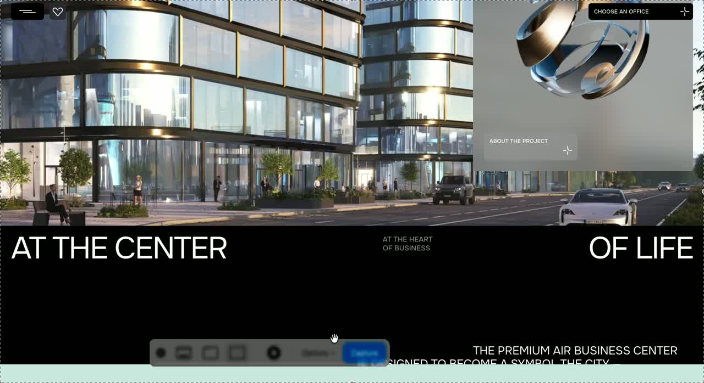
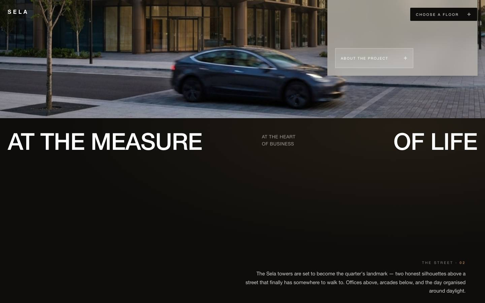

sticky-card v3 (CD RAW) — покадрово проти розкадровки запису 21.06.54
Зліва = живий референс · справа = наш білд на scrollY з контракту розкадровки. Гейти: 1:1 потік ✓ (Δcard==Δscroll), зазор 14.00vh ×5 ✓, пан лінійний від сирого скролу ✓, телепорт ✓, 2560 ✓.
beat-01 · scrollY=0 — тільки фон, картки нема
реф t=0.3sбілд scrollY=0
beat-02 · ~25vh — верх картки на 90vh, титул читається
реф t=1.2sбілд 25vh
beat-04 · ~76vh — картка top≈39vh, сфера, фон дійшов вулиці
реф t=2.6sбілд 76vh
beat-05 · ~99vh — повна картка: титул+сфера+чіп
реф t=3.5sбілд 99vh
beat-07 · ~120vh — темна секція входить знизу
реф t=6.2sбілд 120vh
beat-08 · ~143vh — титул за верхом; темна top≈64vh; spread на краях


реф t=6.8sбілд 143vh
beat-09 · ~152vh — параграф входить справа внизу


реф t=7.4sбілд 152vh
beat-10 · ~168vh — темна ~41%; чіп картки ще видно


реф t=8.6s (кінець запису)білд 168vh
✅ МОЄ ОКО (С33-3): порядок бітів і геометрія збігаються з розкадровкою; контракт витриманий числами (1:1 потік · зазор 14.00vh ×5 · пан лінійний від сирого скролу · телепорт · 2560-fit). CD цього разу НЕ вигадав пін — розкадровка в промпті спрацювала. ⚠️ Формальний video-parity не ганявся; «1-в-1» тут НЕ заявляється — фінальний вердикт = око Єгора ПАРОЮ з записом 21.06.54.
⚠️ ДЕЛЬТИ (обидві дрібні, не блокери): (1) параграф у реф має ВЛАСНУ появу (fade-in при ~35% секції: dark top 64→62vh, а параграф з'являється) — у нас чистий потік, приходить на ~10vh пізніше; це скоуп атома appear/fade-coupling, врахувати при збірці організму. (2) вхід темної секції на beat-07 у реф на ~0.2s пізніше — шум нормалізації швидкості скролу.